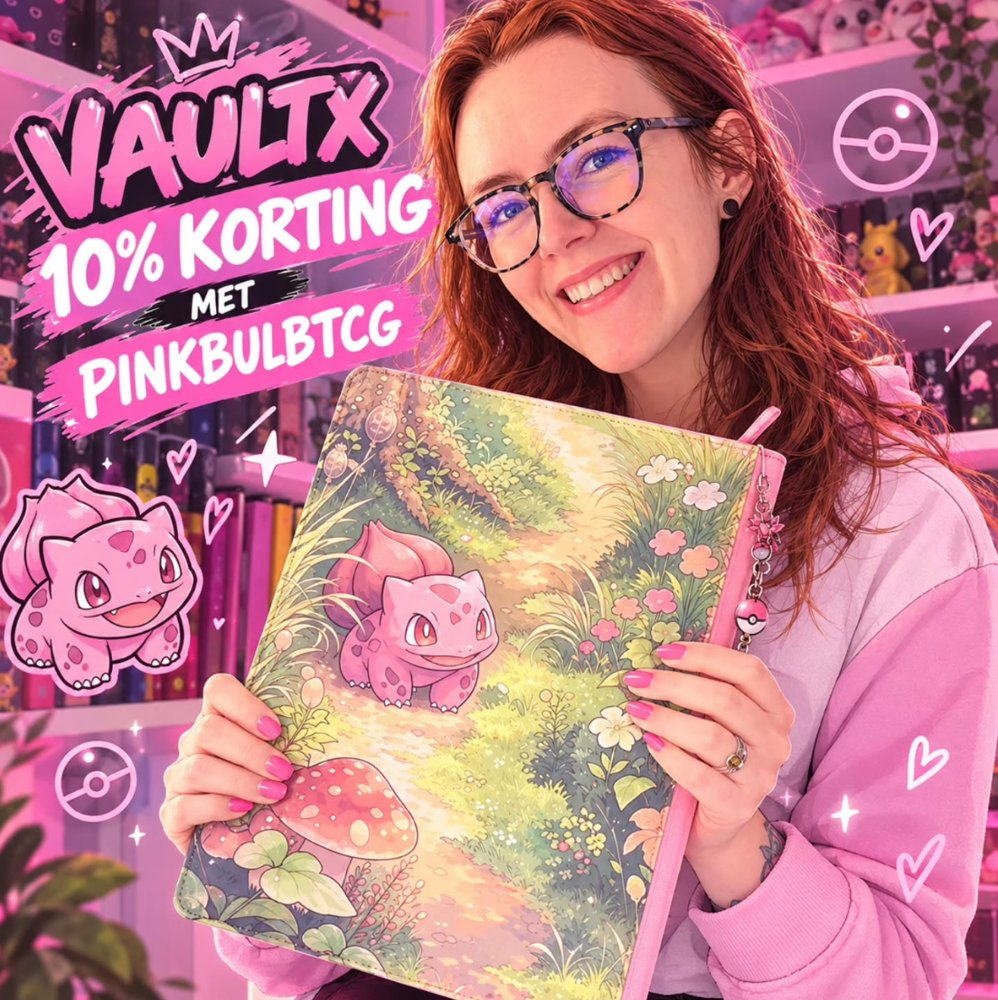

Welke Pokémon binder
past bij jou?
Er zijn zó veel verschillende binders dat je soms door de mappen je kaarten niet meer ziet. 😉 Ga je voor een rits, een elastische band, losse bladen of juist extra bescherming met toploaders? Ik vertel je waar ik zelf op let, wat mijn favorieten zijn en welke voor- en nadelen je tegenkomt.
Binders met rits: mijn favoriet!
Als ik één type binder moet kiezen, dan is het een binder met rits. Ik vind het gewoon een fijn idee dat mijn kaarten netjes opgesloten zitten. Mocht er toch een kaart uit een pocket schuiven, dan kan die in ieder geval niet zomaar uit de hele map vallen.
Zelf gebruik ik het liefst Vault X. Vooral de combinatie van de rits, stevige kaft en pockets die aan de zijkant openen vind ik prettig. En ja, ik vind het natuurlijk ook leuk als mijn collectie er een beetje mooi bij staat!
Een rits maakt een binder niet onverwoestbaar, maar geeft wel extra zekerheid als je hem meeneemt naar een beurs of regelmatig uit de kast pakt.
Binders met een elastische band
Je kent ze vast wel: binders zonder rits die je dicht houdt met een elastische band. Ze zijn vaak makkelijk in gebruik en je hebt de map snel open. Voor een ruilmap of een collectie waar je veel doorheen bladert kan dat prima werken.
Zelf kies ik liever voor een rits. Bij een binder met band blijven de zijkanten namelijk open. Als een kaart uit een pocket schuift, kan die dus makkelijker uit de map vallen. Ook zou ik opletten dat de band niet te strak om een overvolle binder zit, zodat er geen onnodige druk op de kaarten komt.
Dat betekent niet dat iedere binder met elastiek slecht is. Het hangt vooral af van de kwaliteit en hoe je hem gebruikt.
Side-loading of top-loading pockets?
Side-loading pockets ★
Bij side-loading schuif je de kaart vanaf de zijkant in het vakje. Dit heeft mijn voorkeur, omdat de kaart bij het omslaan van pagina's doorgaans beter op zijn plek blijft zitten.
In combinatie met een sleeve en een binder met rits vind ik dit een hele fijne oplossing voor mijn verzameling.
Top-loading pockets
Bij top-loading gaat de kaart vanaf de bovenkant in het vakje. Dat werkt op zich prima, maar als je de binder kantelt of veel meeneemt, kunnen kaarten wat makkelijker naar buiten schuiven.
Het verschilt per pocket en sleeve, maar als ik kan kiezen, ga ik voor de zijkant.
Ringbinders: lekker veel ruimte, maar…
Ringbinders doen mij altijd denken aan die grote schoolmappen van vroeger! 😄 Het handige is dat je zelf bladen kunt toevoegen, verwijderen of verplaatsen. Ideaal als je een collectie hebt die steeds groter wordt.
Toch zou ik zelf voorzichtig zijn met waardevolle kaarten in een ringbinder. Vooral de ronde O-ringen kunnen tegen de bladen drukken en zo op den duur deuken in kaarten veroorzaken. Ook kunnen losse bladen bij veel gebruik beschadigen rond de gaatjes.
Wil je toch een ringbinder? Dan zijn D-ringen doorgaans een betere keuze. Let erop dat de bladen netjes plat liggen, de map niet overvol zit en er niets klem komt tussen de ringen.
Toploader binders: voor je extra bijzondere kaarten
Heb je een dure kaart, een mooie pull of gewoon een kaart waar je superzuinig op bent? Dan is een toploader binder misschien iets voor jou.
Hierbij gaat je kaart eerst in een zachte sleeve, daarna in een stevige toploader en pas daarna in de speciale binder. Daardoor krijgt je kaart extra bescherming tegen buigen en stoten.
Het nadeel? Deze mappen zijn vaak een stuk dikker en er passen minder kaarten in. En niet iedere gewone binder is geschikt voor toploaders, dus kijk goed of je echt een toploader-compatible binder koopt. Voor mijn meest bijzondere kaarten vind ik dat zeker het overwegen waard!
Waar let ik nog meer op?
Bescherm je kaarten
Stop je kaarten het liefst eerst in een sleeve voordat je ze in de binder doet. Kies voor pockets van zuurvrij en PVC-vrij materiaal, zeker als je de collectie jarenlang wilt bewaren. En prop je binder niet te vol: ook een goede map kan kaarten beschadigen als er te veel druk op staat.
Kies het juiste formaat
Voor een kleinere verzameling is een 4-pocket binder handig. Een 9-pocket binder is populair voor complete sets en een 12-pocket binder biedt nog meer ruimte. Kijk vooral hoeveel kaarten je wilt bewaren en of je de binder vaak meeneemt. Groter is niet altijd handiger!
Mijn favoriet: Vault X! 💗
Ik gebruik zelf graag Vault X-binders voor mijn Pokémoncollectie. Wil je er ook eentje proberen? Met mijn kortingscode krijg je 10% korting via mijn persoonlijke link.
Een beetje Bulbasaur kan nooit kwaad! 💗
Deze binder is toch geweldig? Ik ben helemaal weg van de roze details en natuurlijk Bulbasaur! Voor mij mag een binder niet alleen praktisch zijn, hij moet ook gewoon leuk zijn om naar te kijken.
En met een rits blijven mijn kaarten ook nog eens netjes opgeborgen.
Bekijk mijn Instagram-post →
Mijn binders bekijken?
Benieuwd naar mijn eigen collectie en hoe mijn binders eruitzien? Ik heb er ook een post over gedeeld op Instagram!
Extra informatie: Voor de algemene tips over kaartbescherming heb ik onder andere gekeken naar de specificaties van Vault X, TCGNav en de uitleg over toploader binders.
De voorkeuren op deze pagina zijn persoonlijk. Welke binder het beste bij jou past, hangt af van je collectie en hoe je hem gebruikt.